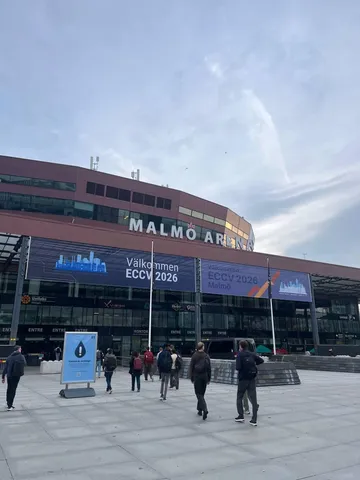
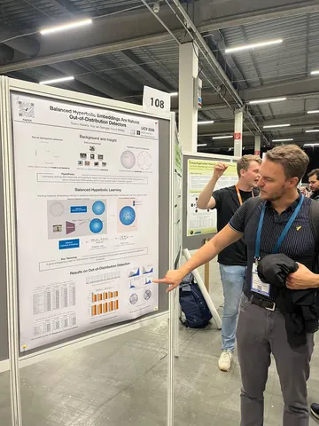
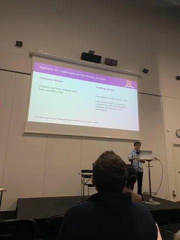
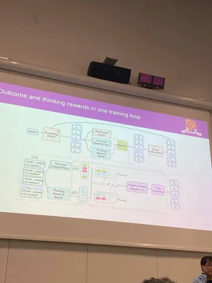
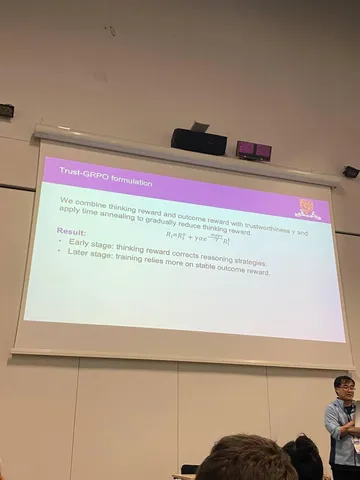

Наши инженеры поделились ещё двумя интересными работами на тему компьютерного зрения. В первой стремятся сделать рассуждения мультимодальных моделей надёжнее, во второй — работают над улучшением распознавания незнакомых данных.
SophiaVL-R1: Reinforcing MLLMs Reasoning with Thinking Reward
Статья была представлена на ICLR 2026. При обучении reasoning-моделей награда обычно зависит только от финального ответа. Но верный ответ ещё не гарантирует правильное рассуждение, ведь модель может прийти к нему случайно, через логические ошибки или противоречивую цепочку. Outcome reward этого не замечает.
Авторы добавляют Thinking Reward Model, которая оценивает рассуждение целиком: его логичность, корректность, согласованность и отсутствие лишних повторений.
Итоговая награда в Trust-GRPO:
Reward = Outcome reward + Trust × Base weight × Time decay × Thinking reward
Где:
• Outcome reward — правильность финального ответа;
• Thinking reward — качество рассуждения;
• Base weight — заданный вес thinking reward;
• Trust — динамическая оценка доверия к Thinking Reward Model.
Для каждого вопроса генерируют группу ответов и сравнивают средний thinking reward правильных и неправильных решений.
Если правильные решения оценены выше, Trust = 1. Если judge в среднем ставит неправильным решениям более высокие оценки, Trust экспоненциально уменьшается пропорционально разнице между этими средними. Так ненадёжный сигнал слабее влияет на обучение.
Time decay постепенно снижает вес thinking reward. Сначала он помогает модели сформировать хорошие стратегии рассуждения, а позднее обучение сильнее опирается на более надёжный и формально проверяемый outcome reward.
Balanced Hyperbolic Embeddings Are Natural Out-of-Distribution Detectors
Авторы этой статьи ставят задачу определить, какие изображения — Out-of-Distribution (OOD).
Проблема следующая. Если классификатору показать «белку», которой в обучении не было, он может уверенно предсказать «кошку», потому что не понимает, что такое «объект OOD».
В работе предлагают устроить пространство признаков так, чтобы сама геометрия помогала модели понять, насколько объект ей знаком. Для этого используют гиперболическое пространство признаков.
Конкретнее: возьмем WordNet или VerbNet, который построит иерархию классов из обучающего датасета (граф). Шаг 1: берём полученный граф и учим эмбеддинги каждого класса в гиперболическом пространство так, чтобы расстояния в нём соответствовали расстояниям в графе.
Шаг 2: берём датасет картинок и сближаем в гиперболическом пространстве эмбеддинги картинки и соответствующего класса.
В результате эмбмеддинги OOD-картинок оказываются ближе к «центру» гиперболического пространства (к корневому классу, а-ля world), а эмбеддинги обычных картинок — ближе к краям, то есть к эмбеддингам соответствующих классов.
#YaECCV2026
Интересное увидели
CV Time




